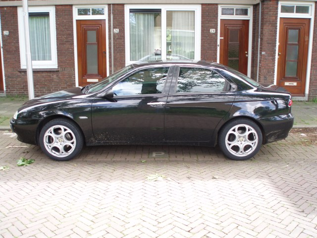
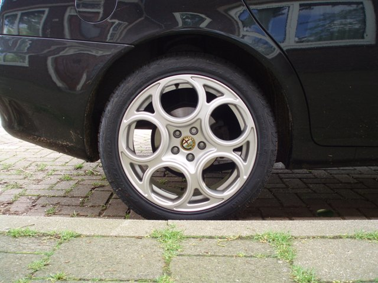
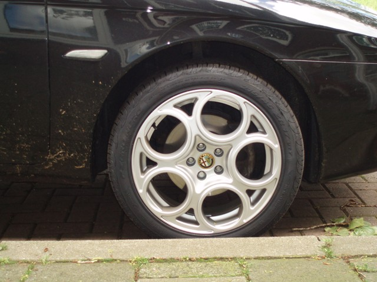
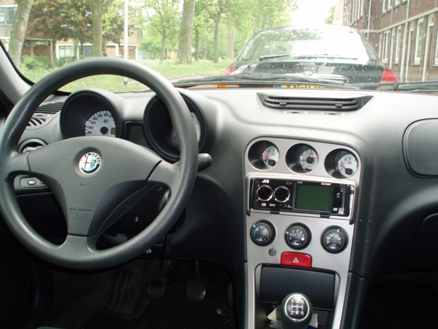
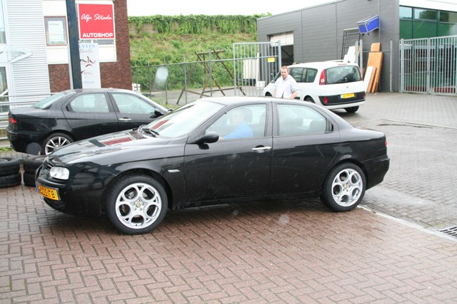

Remco from Delft, The Netherlands.
This is my Alfa Romeo 156 1.8 TS from 2001.
The changes so far on my car have been the 17" GTA wheels with Pirelli P-Zero Nero tyres,
Novitec side blinkers and Carbon look B-styles (not very visible on the pics).
Changes in the future will be Lower suspension,
GTA headlights,
K&N 57i Kit,
Different exhaust,
black windows




Submitted: 2006
![[Prev]](bw_prev.gif)
![[Index]](bw_index.gif)
![[Next]](bw_next.gif)